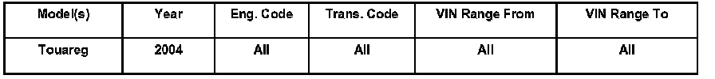
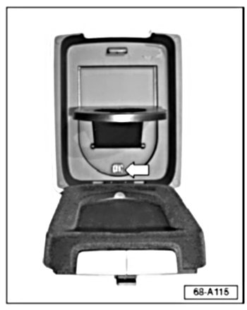
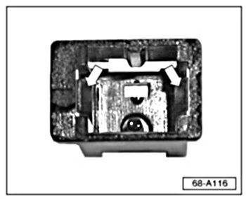
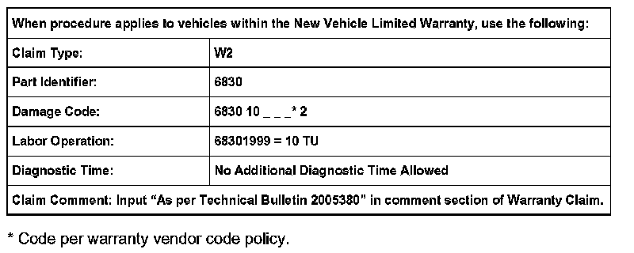
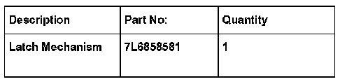

Interior - Front Arm Rest Cupholder Latch Broken
Condition
68 07 03 Feb. 9, 2007, 2005380, Supersedes Technical Bulletin Group 68 number 03-03 dated September 17, 2003 due to inclusion into ElsaWeb and Content.
Front Armrest Cupholder, Latch Mechanism Inoperative

Front armrest cupholder latch mechanism (arrow) is broken, cup holder will not stay latched in the closed position.
Technical Background
Cupholder assembly was replaced due to broken locking segment.
Production Solution
Cupholder locking segment was improved.
Service
DO NOT replace armrest for this condition.
Latch mechanism can be replaced as follows:

- Insert small screwdriver or small pick tool (with a hook at the end) behind locking tabs (arrows) of cupholder latch mechanism.
- Pry tabs inward and snap away from latch mechanism.
- Using the hooked pick tool, pull mechanism out of armrest.
- Install new latch mechanism into armrest. See Required Parts and Tools.

Warranty
Required Parts and Tools

Tip: Part number(s) are for reference only. Always see ETKA for the latest part(s) information.